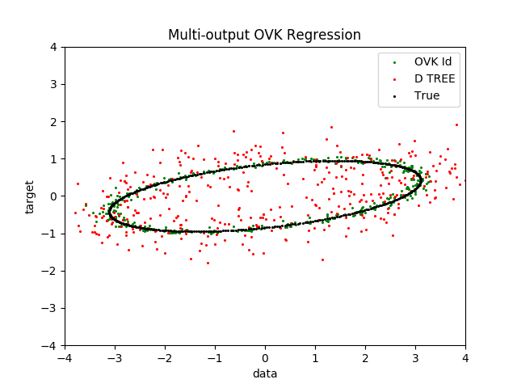

Multi-output Operator-valued kernel Regression¶
An example to illustrate multi-output regression with operator-valued kernels.
We compare Operator-valued kernel (OVK) with multioutput decision tree.
OVK methods can generalise better than decision trees but are slower to train.
Out:
seed = 123
Creating dataset...
Fitting...
Leaning time DPeriodic ID: 0.717 s
Leaning time Trees: 0.003 s
Predicting...
Test time DPeriodic ID: 0.396 s
Test time Trees: 0.000 s
R2 OVK ID: 0.99434
R2 Trees: 0.79143
plotting
Done
# Author: Romain Brault <romain.brault@telecom-paristech.fr> with help from
# the scikit-learn community.
# License: MIT
import operalib as ovk
from sklearn.tree import DecisionTreeRegressor
import numpy as np
import matplotlib.pyplot as plt
import time
print(__doc__)
seed = 123
np.random.seed(seed)
print("seed = %d" % seed)
# Create a random dataset
print("Creating dataset...")
X = 200 * np.random.rand(1000, 1) - 100
y = np.array([np.pi * np.sin(X).ravel(), np.pi * np.cos(X).ravel()]).T
Tr = 2 * np.random.rand(2, 2) - 1
Tr = np.dot(Tr, Tr.T)
Tr = Tr / np.linalg.norm(Tr, 2)
U = np.linalg.cholesky(Tr)
y = np.dot(y, U)
# Add some noise
Sigma = 2 * np.random.rand(2, 2) - 1
Sigma = np.dot(Sigma, Sigma.T)
Sigma = 1. * Sigma / np.linalg.norm(Sigma, 2)
Cov = np.linalg.cholesky(Sigma)
y += np.dot(np.random.randn(y.shape[0], y.shape[1]), Cov)
# Fit
# real period is 2 * pi \approx 6.28, but we set the period to 6 for
# demonstration purpose
print("Fitting...")
start = time.time()
A = np.eye(2)
regr_1 = ovk.OVKRidge('DPeriodic', lbda=0.01, period=6, theta=.995, A=A)
regr_1.fit(X, y)
print("Leaning time DPeriodic ID: %.3f s" % (time.time() - start))
start = time.time()
regr_2 = DecisionTreeRegressor(max_depth=100)
regr_2.fit(X, y)
print("Leaning time Trees: %.3f s" % (time.time() - start))
# Predict
print("Predicting...")
X_test = np.arange(-100.0, 100.0, .5)[:, np.newaxis]
start = time.time()
y_1 = regr_1.predict(X_test)
print("Test time DPeriodic ID: %.3f s" % (time.time() - start))
start = time.time()
y_2 = regr_2.predict(X_test)
print("Test time Trees: %.3f s" % (time.time() - start))
# Ground truth
y_t = np.dot(np.array([np.pi * np.sin(X_test).ravel(),
np.pi * np.cos(X_test).ravel()]).T, U)
print("R2 OVK ID: %.5f" % regr_1.score(X_test, y_t))
print("R2 Trees: %.5f" % regr_2.score(X_test, y_t))
# Plot
print("plotting")
plt.figure()
plt.scatter(y_1[::1, 0], y_1[::1, 1], c="g", label="OVK Id", s=5., lw=0)
plt.scatter(y_2[::1, 0], y_2[::1, 1], c="r", label="D TREE", s=5., lw=0)
# plt.scatter(y[::1, 0], y[::1, 1], c="k", label="Data", s=5., lw = 0)
plt.scatter(y_t[::1, 0], y_t[::1, 1], c="k", label="True", s=5., lw=0)
plt.xlim([-4, 4])
plt.ylim([-4, 4])
plt.xlabel("data")
plt.ylabel("target")
plt.title("Multi-output OVK Regression")
plt.legend()
plt.show()
print("Done")
Total running time of the script: ( 0 minutes 1.442 seconds)